overview
Citra is a terminal-based autonomous coding agent written in Python 3.12. It connects to an OpenAI-compatible chat-completions API, runs a model/tool loop against a sandboxed copy of a user's project, and applies verified changes back to the read-only source repository through a Git-backed staging workflow.
What makes Citra distinctive
- Lifecycle-scoped filesystem. Every Citra process gets an initially empty working directory plus cache/config/data/home mounts that survive all turns and are destroyed only when the application lifecycle closes (
src/citra/context/turn_workspace.py:37). - Read-only source with staged write-back. The user's project (
@source) is never modified by general tools; only theWorkspaceChangesservice may apply staged updates back to it (src/citra/context/workspace_changes.py:137,src/citra/context/turn_workspace.py:63). - Bubblewrap sandbox. Shell commands run under
bwrapwith the host visible read-only, sensitive trees masked, and only Citra-owned directories rebound writable (src/citra/utils/sandbox.py:12). - Foreground steering. While an agent turn runs in a background thread, the terminal stays interactive: queued steering messages cancel remaining tool calls and redirect the model mid-turn (
src/citra/cli/repl.py:65,src/citra/agent/runner.py:140). - Structured conversation memory. Typed memory services (TODOs, facts, decisions, constraints, checkpoints, working state) are owned by the session rather than by individual tool calls (
src/citra/agent/conversation_memory.py:1,src/citra/tools/session_memory/memory_tool.py:31). - Deferred tool catalog. Specialized tools (browser, curl, web search, subprocess, documents, diagrams) stay out of the prompt until explicitly enabled for the turn (
src/citra/tools/tool_registry.py:37,src/citra/tools/default_registry.py:25). - LSP integration. Pyright and TypeScript language servers are started lazily per project root and reused for semantic code intelligence (
src/citra/tools/lsp/manager.py:58).
Package layout
src/citra/
├── main.py # Thin executable facade
├── application.py # Process lifecycle and long-lived service ownership
├── cli/ # REPL loop, steering input, terminal rendering
├── agent/ # Agent loop, session state, steering inbox, memory owner
├── commands/ # Slash-command registry (/help, /model, /lsp, ...)
├── context/ # Execution context, workspaces, config, change control
├── tools/ # Tool base classes, registry, transient tools,
│ ├── lsp/ # LSP client stack
│ ├── session_memory/# typed memory tools
│ └── skills/ # conditionally loaded instruction packs
├── utils/ # API client, prompts, sandbox, repo map, mermaid,
│ # converters, browser/subprocess managers
└── workers/ # Sandbox-side filesystem worker process
The dependency direction is strictly layered: cli → application → agent → context → tools/utils; utils and workers depend on nothing above them.
Runtime component map
